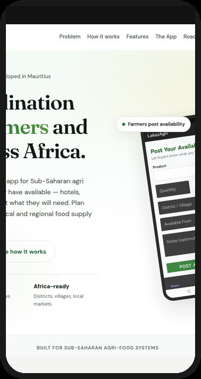
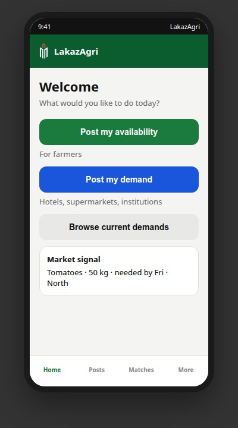
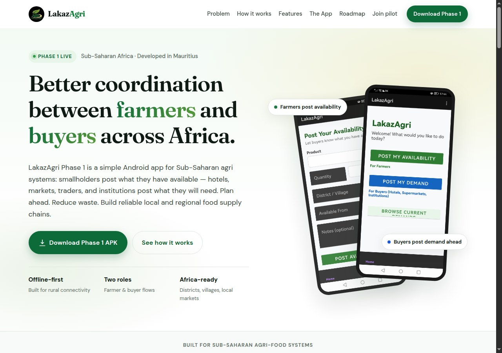

Plantation à l'aveugle
Les agriculteurs produisent sans signaux anticipés des hôtels, institutions ou détaillants - d'où surplus ou un mauvais mix de cultures.
LakazAgri apparie disponibilité et demande, puis rend la commande redevable. L'origine, les photos qualité et la preuve de paiement reposent sur un ID de lot. Ce lot est vérifié sur Hyperledger Fabric, un registre à permission, afin qu'aucune des parties ne puisse réécrire en douce ce qui a été convenu. Le téléphone garde une copie hors-ligne. Le cloud partagé est activé pour une démo planifiée.


Conçu pour les systèmes agroalimentaires d'Afrique subsaharienne
En Afrique subsaharienne, les petits exploitants plantent souvent sans visibilité claire de ce dont les acheteurs auront besoin. Hôtels, marchés et institutions peinent avec un approvisionnement local irrégulier. Le résultat : pertes post-récolte, revenus agricoles instables, et occasions manquées pour les systèmes alimentaires nationaux et régionaux.
Les agriculteurs produisent sans signaux anticipés des hôtels, institutions ou détaillants - d'où surplus ou un mauvais mix de cultures.
Les acheteurs font face à des pénuries de dernière minute, une qualité variable, et une forte dépendance aux intermédiaires, avec peu de données de planification.
La coordination entre production et demande du marché est limitée - et presque aucune donnée agrégée pour la planification locale.
Après une mise en relation, l’acheteur ne voit toujours pas quel produit a été utilisé, à quelle dose, ni quand la récolte est autorisée. Les planteurs sérieux n’ont pas de moyen simple de le montrer.
Inscrivez-vous comme agriculteur ou acheteur, publiez une disponibilité ou une demande, consultez les opportunités de mise en relation, puis ouvrez une fiche confiance / commande pour l'origine, les photos qualité et la preuve de paiement - mobile d'abord et capable hors-ligne.
Ouvrez LakazAgri et sélectionnez Je suis agriculteur ou Je suis acheteur. Vous pourrez changer de rôle plus tard dans les paramètres.
Inscrivez-vous avec nom complet, numéro de téléphone, lieu (district/village/région), et organisation ou nom d'exploitation facultatif. Confidentialité d'abord, par conception.
Les agriculteurs indiquent culture, quantité, lieu et date de disponibilité. Les acheteurs publient le produit recherché, la quantité, l'échéance et la zone ou le marché préféré.
Voyez les opportunités offre-demande, ouvrez une mise en relation, et contactez l'autre partie (ex. WhatsApp) quand vous êtes prêt à traiter.
Créez un ID de lot avec les détails d'origine, ajoutez photos qualité et notes, suivez le statut de paiement et joignez la preuve de reçu - le tout hors-ligne d'abord.

Conçu pour les téléphones que les agriculteurs et les acheteurs ont déjà.
Origine, photos qualité et preuve de paiement s'attachent à chaque commande mise en relation - pas un module complexe séparé.
Les photos qualité et de reçu se compressent sur l'appareil et restent sur le téléphone jusqu'à la synchro ultérieure.
Soutient les liens de confiance existants entre producteurs, coopératives, agrégateurs et acheteurs - n'impose pas un marché anonyme.
Du choix du rôle à la publication et à la navigation, la base est construite et testée pour les premiers utilisateurs.


La coordination permet à l'agriculteur et à l'acheteur de se trouver. La redevabilité est la vérification Hyperledger Fabric du lot : origine, photos qualité et preuve de paiement restent liés à un ID qu'un lecteur ultérieur peut vérifier. La publication fonctionne encore sur le téléphone quand le réseau tombe.
Maurice (sept. 2026) : débat public sur les résidus de pesticides et le bon usage. LakazAgri ne teste pas les lots ; il peut porter la note de pratique du planteur sur la même commande que l’origine et les photos.
Les groupes pays, les publications d'offre et de demande, et la fiche confiance / commande sont construits et montrés sur rendez-vous. Le cloud partagé est en pause jusqu'à un pilote planifié. Les couches suivantes ajoutent des notes de production, une chronologie partagée complète, et des synthèses prêtes à l'export.
Dans l'appli : Mises en relation → ouvrir une mise en relation → Ouvrir la fiche confiance / commande. Le cloud partagé est activé pour une démo planifiée. Détail partenaires / ingénierie : matrice des fonctionnalités.
Le cloud partagé est en pause. Une démo planifiée montre la disponibilité, la demande, la fiche de confiance (origine et ID de lot, photos qualité, preuve de paiement), et la vérification Hyperledger Fabric de ce lot.
E-mail gilbert@mkwel.tech · +230 5479 6356 · EN / FR
Nous invitons producteurs, coopératives, acheteurs et partenaires de la région à essayer la coordination LakazAgri et la fiche confiance / commande en conditions réelles. Développé et d'abord piloté depuis Maurice - conçu pour s'étendre là où agriculteurs et acheteurs ont besoin de signaux plus clairs. Dites-nous qui vous êtes et comment vous souhaitez participer.
Vous préférez l'e-mail ou WhatsApp ?